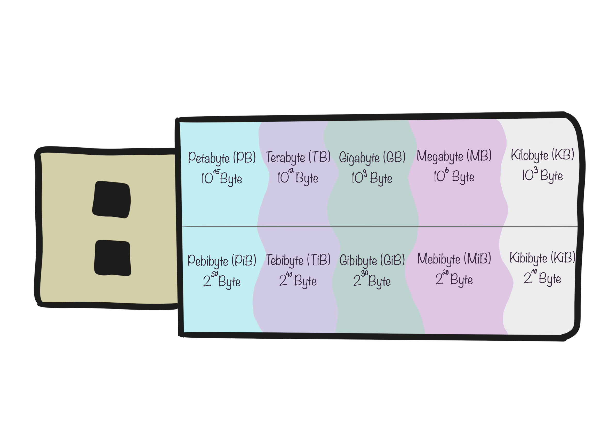

📟 Virtualisierung mit VirtualBox 📦
VirtualBox ist eine kostenlose Software von Oracle, mit der du mehrere Betriebssysteme gleichzeitig auf einem einzigen Computer ausführen kannst. Es erstellt virtuelle Maschinen, die wie echte Computer funktionieren, und erlaubt es, verschiedene Betriebssysteme zu testen und zu nutzen, ohne zusätzliche Hardware.
Wenn VirtualBox bei der Ausführung einer VM Probleme bereitet, kann es helfen, das Floppy-Laufwerk zu deaktivieren und/oder den Controller zu entfernen. Diese Optionen sind oft standardmäßig aktiviert, werden jedoch selten benötigt und können den Startprozess der VM verlangsamen oder Probleme verursachen.
Floppy-Laufwerk deaktivieren:
- Einige virtuelle Maschinen haben ein standardmäßig aktiviertes Floppy-Laufwerk, auch wenn dieses nicht benötigt wird.
- Durch das Deaktivieren des Floppy-Laufwerks im VirtualBox-Manager unter den Einstellungen der jeweiligen VM lässt sich der Bootvorgang beschleunigen und potenzielle Fehler vermeiden.
Controller entfernen:
- Virtuelle Maschinen können mit mehreren Controllern konfiguriert werden (z. B. IDE, SATA), von denen einige möglicherweise unnötig sind.
- Das Entfernen ungenutzter oder fehlerhafter Controller aus den Einstellungen der VM kann Kompatibilitätsprobleme lösen und die Stabilität der virtuellen Maschine verbessern.
Hypervisor Typ 1 (Bare Metal):
Direkte Installation: Läuft direkt auf der Hardware des Hosts, ohne darunter liegendes Betriebssystem.
Performance: Bietet bessere Leistung und Effizienz, da es die Hardware direkt steuert.
Beispiele: VMware ESXi, Microsoft Hyper-V (in der Core-Variante), Xen.
Hypervisor Typ 2 (Hosted):
Installation auf einem Betriebssystem: Läuft als Anwendung auf einem bestehenden Betriebssystem.
Performance: In der Regel weniger effizient, da er über das Host-Betriebssystem läuft, was zusätzliche Overhead verursacht.
Beispiele: VMware Workstation, Oracle VirtualBox, Parallels Desktop.
Zusammengefasst: Typ 1 ist direkter, schneller und für produktive Umgebungen geeignet, während Typ 2 einfacher zu nutzen ist und sich besser für Entwicklungs- oder Testumgebungen eignet.
Ein hosted Hypervisor ist eine Software, die auf einem normalen Betriebssystem läuft und es ermöglicht, mehrere virtuelle Maschinen auf einem Computer zu erstellen.
Ein Snapshot in VirtualBox ist eine gespeicherte Momentaufnahme des aktuellen Zustands einer virtuellen Maschine. Er ermöglicht es, zu diesem Zustand zurückzukehren, falls Änderungen oder Fehler auftreten.
VirtualBox Guest Additions sind Tools, die in einer virtuellen Maschine installiert werden, um die Leistung zu verbessern und Funktionen wie nahtlose Mausintegration, geteilte Ordner und optimierte Grafiken zu ermöglichen.
BIOS (Basic Input/Output System) und UEFI (Unified Extensible Firmware Interface) sind beide Firmware-Schnittstellen, die den Computer beim Einschalten initialisieren und das Betriebssystem laden. Während das BIOS älter und weiter verbreitet ist, hat UEFI in modernen Computern zunehmend an Bedeutung gewonnen.
Unterschiede:
BIOS:
- Ältere Technologie, entwickelt in den 1980er Jahren.
- Textbasierte Oberfläche mit begrenzten Steuerungsmöglichkeiten.
- Unterstützt Festplatten bis 2 TB aufgrund der MBR (Master Boot Record)-Beschränkung.
- Langsamerer Startprozess, da es die Hardware schrittweise initialisiert.
- Kann nur im 16-Bit-Real-Modus arbeiten, was die Funktionalität einschränkt.
- Häufig noch in älteren Computern und Spezialumgebungen zu finden.
UEFI:
- Moderner Standard, der BIOS ersetzt, entwickelt ab den 2000er Jahren.
- Grafische Oberfläche mit Mausunterstützung und erweiterten Einstellungen.
- Unterstützt Festplatten größer als 2 TB durch die Nutzung von GPT (GUID Partition Table).
- Schnellerer Startprozess durch parallele Initialisierung der Hardware.
- Kann im 32-Bit- oder 64-Bit-Modus arbeiten, was mehr Funktionen und bessere Leistung ermöglicht.
- Integrierte Sicherheitsfunktionen wie Secure Boot, das verhindert, dass unsignierte oder manipulierte Software geladen wird.
Einsatzgebiete:
BIOS:
- Noch in älteren Computern oder speziellen Umgebungen, wo moderne Hardware oder Funktionen nicht benötigt werden.
UEFI:
- Standard in fast allen modernen Computern, besonders in solchen, die fortschrittliche Sicherheitsfunktionen und größere Festplatten unterstützen müssen.
VirtualBox bietet verschiedene Netzwerkmodi, um virtuelle Maschinen (VMs) mit dem Host und dem Internet zu verbinden. Diese Modi bestimmen, wie die VM-Netzwerkverbindungen funktionieren und wie sie mit anderen Netzwerken interagieren.
Netzwerkmodi:
NAT (Network Address Translation):
- Standardmodus, der es der VM ermöglicht, das Internet über die IP-Adresse des Hosts zu erreichen.
- Einfach einzurichten, da keine spezielle Netzwerkkonfiguration erforderlich ist.
- VMs haben keinen direkten Zugang zum lokalen Netzwerk des Hosts, sondern nur über NAT.
- Gut geeignet für den einfachen Internetzugang der VM, aber eingeschränkte Netzwerkkommunikation.
Bridged Adapter:
- Ermöglicht der VM, wie ein physisches Gerät im Netzwerk des Hosts zu agieren.
- VM erhält eine eigene IP-Adresse im gleichen Netzwerk wie der Host.
- Erlaubt direkte Kommunikation mit anderen Geräten im Netzwerk.
- Ideal für Szenarien, in denen die VM als eigenständiger Rechner im Netzwerk agieren soll.
Internal Network:
- Schafft ein isoliertes Netzwerk, in dem nur VMs miteinander kommunizieren können.
- Keine Kommunikation mit dem Host oder externen Netzwerken.
- Nützlich für Tests und Szenarien, in denen VMs untereinander vernetzt, aber vom restlichen Netzwerk isoliert sein sollen.
Host-Only Adapter:
- Erstellt ein Netzwerk, in dem die VM nur mit dem Host und anderen VMs im selben Netzwerk kommunizieren kann.
- Keine direkte Verbindung zum Internet.
- Nützlich für den direkten Datenaustausch zwischen Host und VM ohne externe Einflüsse.
Not Attached:
- VM ist nicht mit einem Netzwerk verbunden.
- Praktisch, wenn keine Netzwerkverbindung benötigt wird oder für isolierte Tests.
💽 Windows 10 Installation und Konfiguration 🏴
Auswahl der Sprache und Region.
Der Kompatibilitätsmodus in Windows 10 ermöglicht es, ältere Programme auszuführen, als ob sie in einer früheren Windows-Version laufen, um Komplikationen bei der Software-Kompatibilität zu vermeiden.
Ein Benutzerkonto kann man über die Windows-Einstellungen erstellen.
Zum Öffnen Strg + Umschalt + Esc oder Strg + Alt + Entf drücken. Dient zur Überwachung des Systems und lässt den Nutzer Prozesse beenden, wenn diese sich nicht normal schließen lassen.
Der Windows-Defender ist fest in Windows 10 integriert, um das System vor Schadsoftware zu schützen.
Netzwerkeinstellung um einen Computer in einem Heimnezwerk sichtbar zu machen und die Freigabe der Daten zu erlauben.
Dies ist eine grundlegende Funktion des Windows Update-Dienstes bei Windows 10.
📐 Binär-, Hexadezimalzahlen und Strom berechnen 📝
Definition: Binärzahlen sind Zahlensysteme, die nur die Ziffern 0 und 1 verwenden. Dieses System ist in der Informatik weit verbreitet, da Computer binär arbeiten.
Eigenschaften:
- Basis: 2
- Ziffern: 0 und 1
- Darstellung: Jede Position entspricht einer Potenz von 2. Zum Beispiel ist die Binärzahl
101gleich 5 im Dezimalsystem.
Verwendung: Binärzahlen sind die Grundlage für die Datenspeicherung und -verarbeitung in Computern.
Definition: Hexadezimalzahlen (Hex) sind Zahlensysteme, die 16 verschiedene Ziffern verwenden: 0-9 und A-F, wobei A für 10 und F für 15 steht.
Eigenschaften:
- Basis: 16
- Ziffern: 0-9 und A-F
- Darstellung: Jede Position repräsentiert eine Potenz von 16. Zum Beispiel ist die Hexadezimalzahl
1Agleich 26 im Dezimalsystem.
Verwendung: Hexadezimalzahlen werden oft in der Informatik verwendet, um lange Binärzahlen kompakter darzustellen, z.B. bei Speicheradressen oder Farbcodes.

 URI:
URI:
U = R x I
R = U / I
I= U / R
PIU:
P = I x U
I = P / U
U = P / I
Beispiel: Wandle die Dezimalzahl 202 in eine Hexadezimalzahl um.
Schritte:
- Teile die Zahl durch 16: 202 ÷ 16 = 12 (Ganzzahlergebnis), Rest 10.
- Notiere den Rest: Rest 10 entspricht
Aim Hexadezimalsystem. - Nimm das Ganzzahlergebnis: 12 (das ist kleiner als 16, also der letzte Schritt).
- Konvertiere das Ganzzahlergebnis in Hexadezimal: 12 entspricht
Cim Hexadezimalsystem. - Setze die Hexadezimalziffern zusammen: Das Ergebnis ist
CA.
Ergebnis: 202 in Dezimal entspricht CA in Hexadezimal.
1. Hexadezimalzahl notieren: Beginnen Sie mit der Hexadezimalzahl, die Sie umrechnen möchten, z.B. 1A3.
2. Potenzen von 16 bestimmen: Bestimmen Sie die Potenzen von 16 für jede Stelle der Hexadezimalzahl. Die Potenzen sind 16^2, 16^1 und 16^0.
3. Stellenwerte berechnen: Multiplizieren Sie jede Hexadezimalstelle mit der entsprechenden Potenz von 16:
- 1 * 16^2 = 1 * 256 = 256
- A * 16^1 = 10 * 16 = 160
- 3 * 16^0 = 3 * 1 = 3
4. Ergebnisse addieren: Addieren Sie die Ergebnisse der Multiplikationen:
- 256 + 160 + 3 = 419
5. Dezimalzahl erhalten: Die Dezimalzahl von 1A3 ist 419.
Beispiel: Wandle die Dezimalzahl 13 in eine Binärzahl um.
Schritte:
- Teile die Zahl durch 2: 13 ÷ 2 = 6 (Ganzzahlergebnis), Rest 1.
- Notiere den Rest: Der Rest ist
1. - Teile das Ergebnis erneut durch 2: 6 ÷ 2 = 3 (Ganzzahlergebnis), Rest 0.
- Notiere den Rest: Der Rest ist
0. - Wiederhole den Vorgang, bis das Ergebnis 0 ist:
- 3 ÷ 2 = 1, Rest
1 - 1 ÷ 2 = 0, Rest
1 - Lies die Reste von unten nach oben: Das Ergebnis ist
1101.
Ergebnis: 13 in Dezimal entspricht 1101 in Binär.
1. Binärzahl notieren: Beginnen Sie mit der Binärzahl, die Sie umrechnen möchten, z.B. 1011.
2. Potenzen von 2 bestimmen: Bestimmen Sie die Potenzen von 2 für jede Stelle der Binärzahl. Die Potenzen sind 2^3, 2^2, 2^1 und 2^0.
3. Stellenwerte berechnen: Multiplizieren Sie jede Binärstelle mit der entsprechenden Potenz von 2:
- 1 * 2^3 = 8
- 0 * 2^2 = 0
- 1 * 2^1 = 2
- 1 * 2^0 = 1
4. Ergebnisse addieren: Addieren Sie die Ergebnisse der Multiplikationen:
- 8 + 0 + 2 + 1 = 11
5. Dezimalzahl erhalten: Die Dezimalzahl von 1011 ist 11.
Beispiel: Gegeben sind Spannung (U) = 12V und Widerstand (R) = 6Ω. Berechne die Stromstärke (I).
Formel:
I = U / R
Schritte:
- Setze die gegebenen Werte in die Formel ein:
I = 12V / 6Ω - Teile die Spannung durch den Widerstand:
I = 2A
Ergebnis: Die Stromstärke beträgt 2 Ampere (A).

💼 Wirtschaft & Soziales 💰
Betriebsrat: Ein Betriebsrat ist eine von den Arbeitnehmern eines Unternehmens gewählte Interessenvertretung. Er hat die Aufgabe, die Rechte der Belegschaft zu wahren und ihre Anliegen gegenüber dem Arbeitgeber zu vertreten.
- Wahl und Zusammensetzung: Der Betriebsrat wird von den Arbeitnehmern gewählt. Die Größe des Betriebsrats hängt von der Anzahl der Mitarbeiter im Betrieb ab.
- Rechte und Aufgaben: Der Betriebsrat hat ein Mitbestimmungsrecht bei wichtigen Entscheidungen im Unternehmen, wie z.B. Arbeitszeiten, Urlaubsregelungen und Kündigungen. Er achtet auch auf die Einhaltung von Arbeitsschutzgesetzen und unterstützt bei Konflikten zwischen Mitarbeitern und Arbeitgebern.
- Schutz der Betriebsratsmitglieder: Mitglieder des Betriebsrats genießen besonderen Kündigungsschutz und können nicht ohne Weiteres entlassen werden.
- Zusammenarbeit mit dem Arbeitgeber: Der Betriebsrat arbeitet eng mit dem Arbeitgeber zusammen, um faire und sichere Arbeitsbedingungen zu gewährleisten. Dies geschieht in regelmäßigen Betriebsratssitzungen und Verhandlungen.
- Gesetzliche Grundlagen: Die Rechte und Pflichten des Betriebsrats sind im Betriebsverfassungsgesetz (BetrVG) geregelt.
Arbeitszeitgesetz (ArbZG): Regelt die Höchstarbeitszeit, Pausen und Ruhezeiten. Für IT-Arbeitnehmer bedeutet dies, dass die Arbeitszeiten nicht die gesetzlich festgelegte Höchstdauer überschreiten dürfen und angemessene Pausen zu gewähren sind.
Bundesurlaubsgesetz (BUrlG): Gewährt jedem Arbeitnehmer Anspruch auf einen bestimmten Mindesturlaub pro Jahr. Im IT-Bereich ist dies besonders wichtig, um Erholung und Work-Life-Balance zu gewährleisten.
IT-Sicherheitsgesetz: Unternehmen sind verpflichtet, angemessene Sicherheitsmaßnahmen für IT-Systeme zu treffen. Dies betrifft auch die Verantwortung der Arbeitnehmer, Sicherheitsrichtlinien zu befolgen und Sicherheitsvorfälle zu melden.
Datenschutz-Grundverordnung (DSGVO): Regelt den Umgang mit personenbezogenen Daten. IT-Arbeitnehmer müssen sicherstellen, dass Daten sicher gespeichert und verarbeitet werden und die Datenschutzbestimmungen eingehalten werden.
Rechte:
- Gleichbehandlung: Kein Arbeitnehmer darf wegen Geschlecht, Alter, Rasse oder anderer persönlicher Merkmale benachteiligt werden.
- Schutz vor Überstunden: Arbeitnehmer haben das Recht auf faire Entlohnung für Überstunden oder Freizeitausgleich.
- Informationsrecht: Arbeitnehmer haben das Recht auf Informationen über die Arbeitsbedingungen und -verträge.
- Erholungsurlaub: Anspruch auf bezahlten Erholungsurlaub gemäß dem Bundesurlaubsgesetz (BUrlG).
- Mutterschutz und Elternzeit: Schwangere und frischgebackene Eltern haben Anspruch auf Schutz und Zeit zur Erziehung ihrer Kinder.
- Schutz vor Kündigung: Kündigungsschutz, insbesondere während der Elternzeit, Krankheit oder in der Probezeit.
Pflichten:
- Verschwiegenheitspflicht: Arbeitnehmer müssen vertrauliche Informationen des Unternehmens schützen.
- Pflicht zur Mitarbeit: Arbeitnehmer sind verpflichtet, die Aufgaben im Rahmen ihres Arbeitsvertrages sorgfältig zu erfüllen.
- Compliance: Einhaltung von Sicherheits- und Datenschutzrichtlinien, insbesondere im IT-Bereich.
- Fehlzeitenmeldung: Pflicht zur rechtzeitigen Meldung bei Krankheit oder Abwesenheit gemäß den Unternehmensrichtlinien.
- Fortbildung: Bereitschaft zur kontinuierlichen Weiterbildung, besonders in der sich schnell entwickelnden IT-Branche.
Rechte von Azubis und Umschülern:
- Ausbildungsvergütung: Anspruch auf eine angemessene Ausbildungsvergütung nach dem Berufsbildungsgesetz (BBiG).
- Freistellung für die Berufsschule: Anspruch auf Freistellung für den Besuch der Berufsschule und für Prüfungen.
- Betreuung und Anleitung: Anspruch auf angemessene Anleitung und Betreuung durch Ausbilder gemäß dem BBiG.
- Urlaubsanspruch: Anspruch auf Urlaub gemäß den gesetzlichen Regelungen oder Tarifverträgen.
- Gesundheitsschutz: Schutz vor gesundheitlichen Gefahren und Förderung der Arbeitsfähigkeit.
Pflichten von Azubis und Umschülern:
- Lernpflicht: Pflicht zur aktiven Teilnahme an Ausbildungsmaßnahmen und zur Weiterbildung.
- Pflicht zur Dokumentation: Führung eines Berichtshefts oder Ausbildungsnachweises gemäß den Vorgaben.
- Verhalten: Pflicht zur Einhaltung der Unternehmensregeln und der Vorschriften des Ausbildungsbetriebs.
- Berichterstattung: Pflicht zur regelmäßigen Berichterstattung an den Ausbilder über den Fortschritt der Ausbildung.
Datenschutz-Grundverordnung (DSGVO): Die DSGVO ist eine Verordnung der Europäischen Union, die den Schutz personenbezogener Daten regelt. Sie legt fest, wie Unternehmen mit personenbezogenen Daten umgehen müssen.
Wichtige Prinzipien:
- Rechtmäßigkeit: Daten müssen rechtmäßig verarbeitet werden, basierend auf einer gültigen Rechtsgrundlage.
- Transparenz: Personen müssen informiert werden, welche Daten gesammelt werden und wie sie verwendet werden.
- Datenminimierung: Nur die für den Zweck notwendigen Daten sollen gesammelt und verarbeitet werden.
- Speicherbegrenzung: Daten dürfen nicht länger aufbewahrt werden als nötig.
- Integrität und Vertraulichkeit: Daten müssen sicher gespeichert und verarbeitet werden, um Missbrauch zu verhindern.
Betroffenenrechte:
- Recht auf Auskunft: Personen können erfahren, welche Daten über sie gespeichert sind.
- Recht auf Berichtigung: Personen können falsche oder unvollständige Daten korrigieren lassen.
- Recht auf Löschung: Personen können verlangen, dass ihre Daten gelöscht werden, wenn sie nicht mehr benötigt werden.
- Recht auf Datenübertragbarkeit: Personen können ihre Daten in einem maschinenlesbaren Format erhalten und an andere Unternehmen übermitteln lassen.
- Recht auf Widerspruch: Personen können gegen die Verarbeitung ihrer Daten Widerspruch einlegen, insbesondere bei Direktwerbung.
Das Risikomanagement in der IT ist ein systematischer Prozess, um potenzielle Risiken, die die IT-Infrastruktur oder IT-Dienste betreffen könnten, zu identifizieren, zu bewerten und zu steuern.
Es umfasst folgende Schritte:
Risikoidentifikation: Erkennen von Risiken, die die IT-Systeme, Daten oder Netzwerke betreffen können. Dazu gehören technische Ausfälle, Cyberangriffe, menschliche Fehler oder Naturkatastrophen.
Risikobewertung: Analyse der identifizierten Risiken hinsichtlich ihrer Wahrscheinlichkeit und möglichen Auswirkungen. Dies hilft bei der Priorisierung der Risiken.
Risikosteuerung: Maßnahmen zur Vermeidung, Minderung, Übertragung oder Akzeptanz der Risiken werden entwickelt und implementiert. Beispiele sind Sicherheitsprotokolle, Backups, Schulungen und Versicherungen.
Überwachung und Überprüfung: Kontinuierliche Überwachung der IT-Risiken und Anpassung der Strategien, um neuen Bedrohungen oder veränderten Rahmenbedingungen gerecht zu werden.
Ziel des IT-Risikomanagements ist es, das Unternehmen vor Verlusten und Schäden zu schützen und die Geschäftsabläufe abzusichern.
Kommerzielle Lizenzen: Diese Lizenzen werden gegen Bezahlung vergeben und erlauben die Nutzung von Software gemäß den vertraglichen Vereinbarungen.
Open-Source-Lizenzen: Erlauben die Nutzung, Modifikation und Verbreitung von Software. Beispiele sind die GNU General Public License (GPL) und die MIT-Lizenz.
Freie Lizenzen: Diese bieten bestimmte Freiheiten, wie die kostenfreie Nutzung und Modifikation, können aber auch Einschränkungen beinhalten, wie z.B. die Pflicht zur Weitergabe des Quellcodes.
Einhalten der Lizenzbedingungen: Nutzer müssen die spezifischen Bedingungen der Lizenz, wie z.B. die Angabe des Urhebers und die Verbreitung unter derselben Lizenz, beachten.
Erwerb der Lizenz: Der Erwerb einer Lizenz sollte immer durch einen legalen Vertrag oder Kauf erfolgen, um sicherzustellen, dass alle rechtlichen Anforderungen erfüllt sind.
Wartung und Updates: Einige Lizenzen beinhalten Verpflichtungen zur Wartung und regelmäßigen Updates der Software.
Rechtskonformität: Nutzer sollten sicherstellen, dass alle Lizenzbedingungen eingehalten werden, um rechtliche Konsequenzen zu vermeiden.
💻 Aufbau eines PCs 🔧
1. Gehäuse: Das Gehäuse schützt die inneren Komponenten des PCs und sorgt für die Belüftung.
2. Mainboard: Auch als Motherboard bekannt, ist das Mainboard die zentrale Platine, auf der alle anderen Komponenten verbunden werden.
3. Prozessor (CPU): Der Prozessor ist das Herz des PCs, der die Berechnungen und Befehle ausführt.
4. Arbeitsspeicher (RAM): RAM speichert temporäre Daten, die der Prozessor schnell erreichen muss.
5. Festplatte / SSD: Speichert alle Daten dauerhaft. Eine SSD ist schneller als eine herkömmliche Festplatte (HDD).
6. Grafikkarte: Verantwortlich für die Darstellung von Bildern und Videos auf dem Monitor.
7. Netzteil: Versorgt alle Komponenten des PCs mit Strom.
8. Kühlung: Kühlsysteme (Lüfter oder Wasser) verhindern Überhitzung der Komponenten.
1. Vorbereitung: Stellen Sie sicher, dass Sie alle benötigten Komponenten und Werkzeuge bereit haben. Tragen Sie antistatische Handschuhe, um Schäden durch elektrostatische Entladung zu vermeiden.
2. Mainboard einbauen: Installieren Sie das Mainboard im Gehäuse und befestigen Sie es mit Schrauben an den Standoffs im Gehäuse.
3. Prozessor einsetzen: Setzen Sie die CPU vorsichtig in den CPU-Sockel auf dem Mainboard ein und befestigen Sie den Kühlkörper.
4. RAM installieren: Stecken Sie die RAM-Riegel in die entsprechenden Slots auf dem Mainboard. Achten Sie darauf, dass sie richtig einrasten.
5. Festplatte/SSD montieren: Befestigen Sie die Festplatte oder SSD im Gehäuse. Verbinden Sie sie mit dem Mainboard und dem Netzteil.
6. Grafikkarte einbauen: Stecken Sie die Grafikkarte in den PCIe-Slot auf dem Mainboard und sichern Sie sie mit Schrauben.
7. Netzteil anschließen: Verbinden Sie die Kabel des Netzteils mit dem Mainboard, der Grafikkarte und den Speicherlaufwerken.
8. Kühlung installieren: Montieren Sie alle benötigten Lüfter oder die Wasserkühlung, um eine ausreichende Belüftung sicherzustellen.
9. Kabelmanagement: Verlegen Sie die Kabel ordentlich, um den Luftstrom im Gehäuse zu verbessern und einen sauberen Aufbau zu gewährleisten.
10. Testen: Schalten Sie den PC ein und überprüfen Sie, ob alle Komponenten korrekt funktionieren. Testen Sie auch, ob das BIOS/UEFI das System erkennt.
1. Kein Bild auf dem Monitor: Überprüfen Sie die Kabelverbindungen zur Grafikkarte und zum Monitor. Stellen Sie sicher, dass die Grafikkarte richtig im Slot sitzt.
2. Kein Strom: Vergewissern Sie sich, dass alle Kabel vom Netzteil korrekt angeschlossen sind und das Netzteil eingeschaltet ist.
3. Lüfter laufen nicht: Prüfen Sie die Verbindungen der Lüfter und stellen Sie sicher, dass sie korrekt an das Mainboard oder das Netzteil angeschlossen sind.
4. System startet nicht: Überprüfen Sie alle Komponenten, um sicherzustellen, dass sie richtig installiert sind. Stellen Sie auch sicher, dass keine Schrauben oder andere Objekte Kurzschlüsse verursachen.
5. BIOS/UEFI Einstellungen: Bei Problemen mit der Erkennung von Komponenten überprüfen Sie die BIOS/UEFI-Einstellungen und aktualisieren Sie gegebenenfalls das BIOS/UEFI.
🕸 Abkürzungen und Begriffe zum Thema Netzwerke 📶
TCP (Transmission Control Protocol) sorgt dafür, dass Daten zuverlässig und in der richtigen Reihenfolge zwischen Computern übertragen werden.
IP (Internet Protocol) kümmert sich darum, die Datenpakete an die richtige Adresse (IP-Adresse) zu schicken, ähnlich wie eine Adresse auf einem Brief.
RAID (Redundant Array of Independent Discs) ist eine Technologie, die mehrere Festplatten zu einem System kombiniert, um entweder die Geschwindigkeit der Datenverarbeitung zu erhöhen oder die Datensicherheit zu verbessern.
RAID 0: Bei RAID 0 werden Daten in kleine Blöcke auf mehrere Festplatten verteilt (Data Striping). Das erhöht die Geschwindigkeit der Datenübertragung, da mehrere Festplatten gleichzeitig genutzt werden können. Allerdings bietet RAID 0 keine Datensicherheit – wenn eine Festplatte ausfällt, gehen alle Daten verloren.
RAID 1: RAID 1 sorgt für Datensicherheit durch Spiegelung (Data Mirroring). Dabei werden alle Daten identisch auf zwei oder mehr Festplatten gespeichert. Fällt eine Festplatte aus, sind die Daten auf der anderen Festplatte weiterhin vollständig vorhanden. Der Nachteil ist, dass der doppelte Speicherplatz benötigt wird.
RAID 3: RAID 3 kombiniert Data Striping mit einer Paritätsprüfung. Die Daten werden auf mehrere Festplatten verteilt, während eine zusätzliche Festplatte Paritätsinformationen speichert, um die Datenintegrität zu gewährleisten. RAID 3 bietet hohe Zuverlässigkeit und eignet sich besonders für Anwendungen, die große Datenmengen verarbeiten. Allerdings kann das Schreiben von Daten langsamer sein, da die Paritätsdaten aktualisiert werden müssen.
Ein Gateway ist ein Netzwerkgerät, das als Vermittler zwischen zwei verschiedenen Netzwerken dient, oft mit unterschiedlichen Protokollen oder Architekturen.
Beispiel: Ein Router in deinem Zuhause fungiert oft als Gateway, indem er dein Heimnetzwerk mit dem Internet verbindet.
LAN (Local Area Network): Ein Netzwerk für Geräte in einem kleinen Bereich, wie ein Büro oder ein Haus.
WLAN (Wireless LAN): Ein drahtloses LAN, das Geräte über Funk (Wi-Fi) verbindet.
WAN (Wide Area Network): Ein Netzwerk, das große geografische Bereiche abdeckt, oft durch Verbindung mehrerer LANs, z. B. das Internet.
VLAN (Virtual LAN): Ein virtuelles Netzwerk innerhalb eines physischen LANs, das Geräte in logische Gruppen aufteilt.
Ethernet: Eine Technologie für kabelgebundene Netzwerke, die Daten über Kabel überträgt.
MAN (Metropolitan Area Network): Ein Netzwerk, das eine Stadt oder ein großes Gebäude verbindet, größer als ein LAN, aber kleiner als ein WAN.
PAN (Personal Area Network): Ein kleines Netzwerk, das Geräte in der Nähe einer Person verbindet, z. B. ein Smartphone und ein Laptop über Bluetooth.
VPN (Virtual Private Network): Ein sicheres Netzwerk, das über das Internet eingerichtet wird, um private Daten zu verschlüsseln und sicher zu übertragen.
Cellular Network: Ein Netzwerk, das über Mobilfunkmasten funktioniert, um mobile Geräte wie Smartphones zu verbinden (z. B. 4G, 5G).
Ad-Hoc Network: Ein Netzwerk, das spontan zwischen Geräten ohne zentrale Infrastruktur eingerichtet wird, oft verwendet für Peer-to-Peer-Verbindungen.
Mesh Network: Ein Netzwerktyp, bei dem Geräte direkt miteinander verbunden sind und Daten durch mehrere Knotenpunkte weiterleiten, um die Netzwerkabdeckung zu verbessern.
Das OSI-Modell (Open Systems Interconnection) ist ein sieben-Schichten-Modell für Netzwerkkommunikation, das hilft, Netzwerksysteme zu verstehen und zu standardisieren.
Layer 7: Anwendung
Stellt Dienste für Endanwenderanwendungen bereit.
Layer 6: Darstellung
Stellt sicher, dass die Daten in einem standardisierten Format vorliegen.
Layer 5: Sitzung
Verwaltet die Sitzungen und den Dialog zwischen den Anwendungen.
Layer 4: Transport
Stellt die Übertragung von Daten zwischen Endsystemen sicher.
Layer 3: Netzwerk
Verantwortlich für die Weiterleitung der Pakete durch das Netzwerk.
Layer 2: Sicherung
Stellt die fehlerfreie Übertragung von Frames zwischen Geräten sicher.
Layer 1: Physikalisch
Definiert die physikalischen Mittel für die Datenübertragung.
Eine Firewall ist ein Sicherheitssystem, das den Datenverkehr zwischen verschiedenen Netzwerken kontrolliert und potenziell schädliche Daten blockiert.
WEP, Wired Equivalent Privacy: Eine veraltete und unsichere WLAN-Verschlüsselung, die leicht zu knacken ist.
WPA, Wi-Fi Protected Access: Eine verbesserte WLAN-Verschlüsselung, die stärker als WEP ist, aber mittlerweile veraltet.
WPA2: Bietet stärkeren Schutz als WPA und ist weit verbreitet für sicheres WLAN.
WPA3: Die neueste und sicherste WLAN-Verschlüsselung, die noch besseren Schutz und Datenschutz bietet.
TKIP, Temporal Key Integrity Protocol: Ein Verschlüsselungsprotokoll für WPA, das inzwischen als unsicher gilt.
AES, Advanced Encryption Standard: Ein moderner, sehr sicherer Verschlüsselungsstandard, der in WPA2 und WPA3 verwendet wird.
HTTPS (Hypertext Transfer Protocol Secure): Ein sicheres Protokoll für die Übertragung von Webseiten, das Daten verschlüsselt.
HTTP (Hypertext Transfer Protocol): Ein Standardprotokoll für die Übertragung von Webseiten ohne Verschlüsselung.
FTP (File Transfer Protocol): Ein Protokoll zum Übertragen von Dateien zwischen Computern über das Netzwerk.
DNS (Domain Name System): Ein Protokoll, das Domainnamen in IP-Adressen übersetzt, um Websites zu finden.
SMTP (Simple Mail Transfer Protocol): Ein Protokoll, das für das Versenden von E-Mails über das Internet verwendet wird.
Das DHCP-Protokoll (Dynamic Host Configuration Protocol) ist ein Netzwerkprotokoll, das automatisch IP-Adressen und andere Netzwerkeinstellungen an Geräte vergibt, wenn sie sich mit einem Netzwerk verbinden.
Subnetting ist die Aufteilung eines großen Netzwerks in kleinere, verwaltbare Teile, sogenannte Subnetze, um die Netzwerkverwaltung zu vereinfachen und die Sicherheit zu erhöhen.
Das ARP-Protokoll (Address Resolution Protocol) wird verwendet, um die IP-Adresse eines Geräts in die MAC-Adresse zu übersetzen, die für die Kommunikation innerhalb eines lokalen Netzwerks benötigt wird.
IPv4 (Internet Protocol Version 4): Die vierte Version des Internetprotokolls, verwendet 32-Bit-Adressen, die in vier Gruppen von Zahlen dargestellt werden (z. B. 192.168.1.1).
IPv6 (Internet Protocol Version 6): Die neueste Version des Internetprotokolls, verwendet 128-Bit-Adressen, die in acht Gruppen von Hexadezimalzahlen dargestellt werden (z. B. 2001:0db8:85a3:0000:0000:8a2e:0370:7334).
Eine MAC-Adresse (Media Access Control Address) ist eine eindeutige, physikalische Adresse, die jedem Netzwerkgerät zugewiesen ist und es identifizierbar macht. MAC-Adressen lassen sich außerdem über die Router-Einstellungen Whitelisten. Das bedeutet, dass ausschließlich MAC-Adressen, die in der Whitelist angegeben sind, auf das Netzwerk zugreifen können.
Denial of Service (DoS): Ein Angriff eines Computers oder Netzwerkes, bei dem ein Dienst oder eine Website durch Überflutung mit Anfragen so stark belastet wird, dass sie nicht mehr erreichbar ist.
Ein DDoS (Distributed Denial of Service)-Angriff ist eine erweiterte Form des DoS-Angriffs, bei dem mehrere Computer oder Netzwerke gleichzeitig eine Website oder einen Dienst mit Anfragen überfluten, um ihn zum Ausfall zu bringen.
Ein Betrugsversuch, bei dem Angreifer versuchen, sensible Informationen wie Passwörter oder Kreditkartendaten zu stehlen, indem sie sich als vertrauenswürdige Quelle ausgeben.
Eine Technik, bei der Angreifer sich als jemand anderes ausgeben, um Zugang zu Systemen oder Daten zu erhalten, indem sie gefälschte Identitäten oder Adressen verwenden. Beispiel: Bei der Polizei anrufen und behaupten man sei Mitarbeiter einer anderen Dienststelle und man brauche Informationen über Person xy.
Ein Angriff, bei dem ein Angreifer systematisch alle möglichen Passwortkombinationen ausprobiert, um Zugriff auf ein Konto oder System zu erhalten.
Ein Proxy-Server ist ein Vermittler, der Anfragen von Clients an andere Server weiterleitet und dabei oft Funktionen wie Caching, Anonymisierung oder Filterung bietet.
Ein Load Balancer verteilt eingehende Netzwerk- oder Anwendungsverkehr auf mehrere Server, um die Last auszugleichen und die Verfügbarkeit zu erhöhen.
Eine DMZ (Demilitarisierte Zone) ist ein Netzwerksegment, das zwischen einem internen Netzwerk und dem öffentlichen Internet liegt. Sie wird genutzt, um Systeme wie Web- und Mail-Server, die von außen erreichbar sein müssen, von sensiblen internen Netzwerken zu isolieren. Das Ziel ist es, bei einem Angriff auf diese Systeme den Schaden zu begrenzen, indem der Zugang zum internen Netzwerk erschwert wird. In einer typischen Konfiguration schützt eine Firewall die DMZ und eine weitere Firewall trennt die DMZ vom internen Netzwerk.
NAT (Network Address Translation) ist ein Verfahren, das es ermöglicht, mehrere Geräte in einem lokalen Netzwerk eine einzige öffentliche IP-Adresse teilen zu lassen.
UDP (User Datagram Protocol) ist ein verbindungsloses Protokoll, das Daten schnell, aber ohne Garantie für die Reihenfolge oder Zuverlässigkeit überträgt.